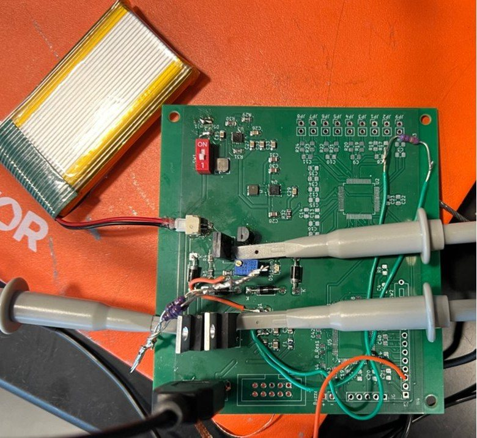
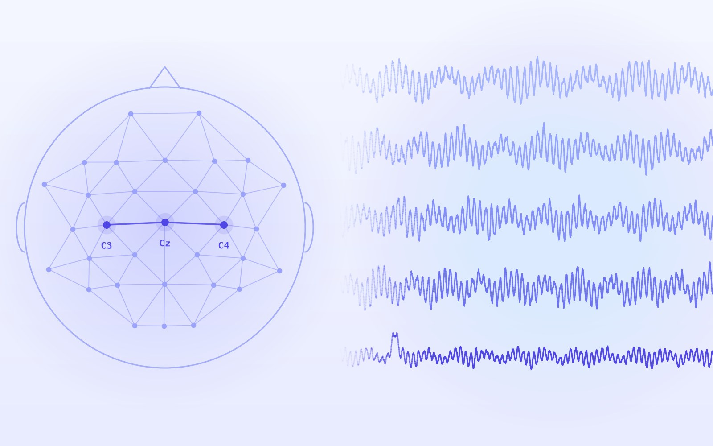

Nikhil Talwalkar
I'm moving into machine learning, from foundation models to how they hold up on real-world data. I bring a hardware background: I’ve built EEG devices from custom PCBs to advanced ML pipelines.
From January I'm starting an Independent Study on EEG foundation models and how well they hold up when the data shifts.
I want to find out whether models pretrained on thousands of hours of EEG can remove the per-user calibration my own devices needed.
- ISO · Spring 2027
- Department of Computing, Imperial
- Self-supervised learning
- Distribution shift
Alongside it I'm taking advanced computer architecture, ML systems and hardware, and software engineering for ML. I haven't chosen my MSc thesis project yet.
Things I've built
Hardware, firmware, operating systems and full-stack tools. Each project has its own page with the design decisions and results.

EEG Drowsiness Detection Headband
A wearable that spots the onset of drowsiness from forehead EEG and sounds an alarm in under 2 seconds. All processing runs on the device.
- KiCad
- ADS1299
- STM32F412
- C
- DSP

Real-Time Motor Imagery BCI
Imagine moving your left or right hand and a car changes lanes. A 4-layer board with USB-C charging classifies the signal on the chip.
- 4-layer PCB
- STM32WB55
- BLE RF
- Python
- CSP + LDA

NeuroScope
Load any EEG recording or public dataset and compare 14 classical, Riemannian and deep decoders with leakage-safe cross-validation, then replay the recording live.
- FastAPI
- React
- MNE-Python
- pyRiemann
- PyTorch
More projects
- 2026
AI-Powered Developer Tools
A utility-bill analyser and a Gmail digest bot, built with FastAPI and the Claude API.
→ - 2025
RISC-V Operating System
A Unix V6-style kernel in C with drivers, a file system, threads, virtual memory and user processes.
→ - 2025
FPGA Space Invaders
Space Invaders in SystemVerilog on an FPGA, with HDMI output and a USB keyboard over SPI.
→
Where I've worked
Data Platform Intern
- Built a Go proxy server between Metabase and PostgreSQL that handles SSL/TLS negotiation and query routing, which made data access more reliable.
- Wrote backend services in Go (Fiber, net/http) for data querying, Metabase API routes and Elasticsearch index search, which sped up API responses.
- Built Metabase dashboards over SQL data models with dynamic filtering.
Software Intern
- Built custom Apache NiFi processors in Java and Maven that ingest CSV files and automate data loading.
- Designed a PostgreSQL store, managed through NiFi Registry, for pipeline metadata, making pipelines easier to version and trace.
Research Intern
- Developed control strategies to improve the stability and trajectory control of marine mechanical systems.
- Implemented a PID controller and a digital twin in C and Unity.
- Explored RBF and MLP neural networks in Python to refine the control designs.
Background
Imperial College London
- Advanced Computer Architecture
- ML Systems & HW
- SWE for ML
University of Illinois Urbana-Champaign
- Advanced Digital Projects Lab
- Digital Systems Lab
- Senior Design
Languages
- C / C++
- Go
- Python
- Java
- SystemVerilog
- SQL
- JavaScript
- R
Hardware
- STM32 / CubeMX
- KiCad
- FPGA / Vivado
- SPI
- I2C
- UART
- BLE
- SWD
ML & data
- PyTorch
- MNE-Python
- NumPy
- Matplotlib
- Jupyter
- FastAPI
- Claude API
Tools
- Linux
- Docker
- Git
- Bash
- Azure
- PostgreSQL
- Jira